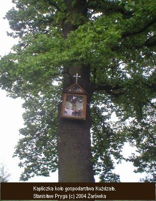

Kapliczki w Żarówce / Waysite Shrine in Zarowka
Zdjęcia wykonane przez Stanisława Prygę. Żarówka 2004.
Kapliczka na podwórku Antoniego Cichonia ufundowana przez Ludwika Szczurka.
Kapliczka przy dawnym kiosku spożywczym GS ufundowana przez Wojciecha (Wojtka Bartka) Cichonia w 198?.

Figura Chrystusa na podwórku Aleksandra Mroza ufundowana przez Aleksandra (Sołtysa) Mroza w 199?.
Cmentarz choleryczny z krzyżem. 184?.
Krzyż na podwórku Mariana Mrozowskiego. 19??. 
Krzyż przy drodze do Zdziarca, koło gospodarstwa Kużdzała. 19??.
Kapliczka przy drodze do Zdziarca, koło gospodarstwa Pszczoły. 19??.
Krzyż przy gospodarstwie Tadeusza Mroza. 19??.